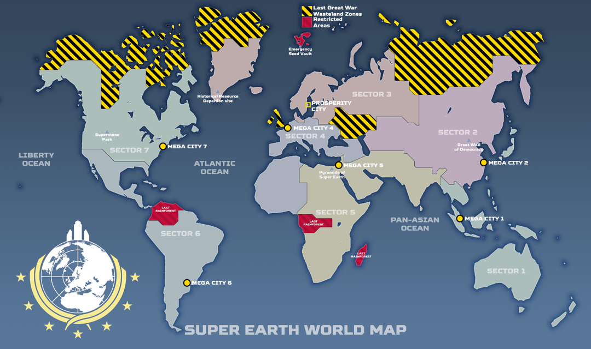
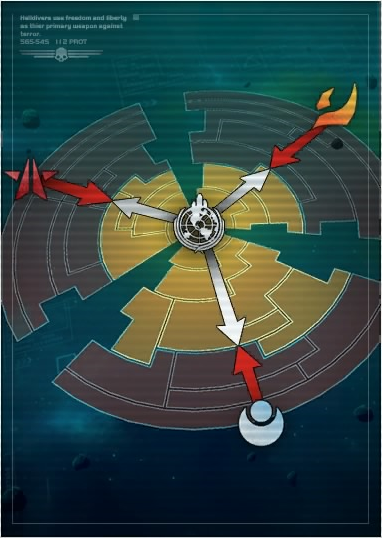
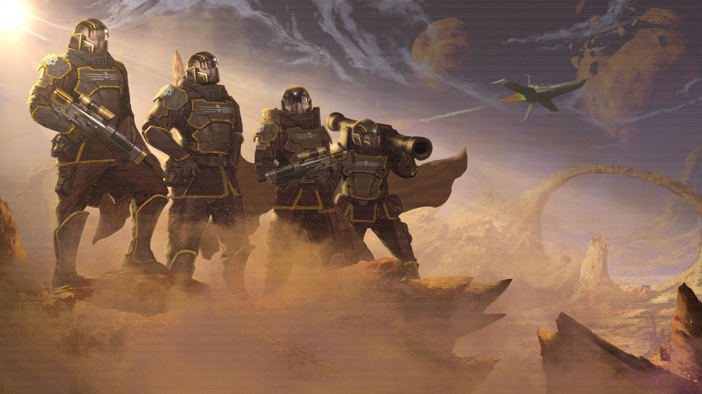

Терминиды. Во время начала своей колониальной кампании, Супер Земля разработала биоматериал "Э-710", который извлекался из самих терминидов, вида стадных огромных жуков, которые находились под пристальным контролем, в фабричных условиях. Однако они вырвались из-под контроля и начали наступление, обладая громадным численным ресурсом и способностью распростронять свои споры между планет, что позволяло им оккупировать всё больше и больше подконтрольных нам колоний.
Процветающий и истинно свободный образ жизни нашей галактики это, конечно, управляемая демократия. Но так было не всегда.
Эпоха старого тиранического мира подходила к концу, множество конфликтующих тиранических идеологий враждовали друг с другом, что привело к всемасштабной ядерной войне. Человечество было на грани вымирания, но сплотившись между собой, самые отважные и храбрые объединили всю планету в единое государство. Спустя долгие годы восстановлений и реформ, наша планета стала называться Супер Земля.
Больше не было враждующих держав, появился единый демократичесий строй. Карта Супер Земли:


Быстро встав на ноги, человечество начало развиваться с буквально космической скоростью. Но амбициозно расширяя своё колониальное влияние по всей галактике, Супер Земля столкнулась с многими трудностями. Во время колониальной кампании, человечество было подвергнуто гнусному нападению с многих сторон, что знаменовало собой начало Первой Галактической Войны.
Против нас выступило три разных противника:
Киборги. Во время скачка общего технологического прогресса, многие люди, особенно солдаты, стали всячески модернезировать свои тела. Улучшенные конечности, органы и так далее, позволяли продлить жизнь, улучшить физические навыки человека. Однако из-за чрезмерного использования таких технологий, некоторые люди стали терять контроль, всё чаще "улучшая" себя. Многие стали злоупотреблять имплантами. Объединившись в единую группировку, киборги объявили свою независимость и территории, подло обвинив Супер Землю в угнетении и тоталитаризме. Как итог, киборги оккупировали несколько космических секторов в галактике, подняли бунт и объявили войну Супер Земле, угрожая ей тиранией и уничтожением.
Просветлённые. Под конец колонизации галактики, человество наткнулось на её дальних просторах на неизвиданную ранее разумную жизнь. Так называемые "просветлённые" отличались невероятным техническим прогрессом. Используя передовые методы приломления фотонов света, атомный синтез и переобразовывание чёрной материи, они обладали ужасающим военным потенциалом. Естественно, такой разумный вид очень сильно угрожал Супер Земле. Их нежелание превстать на колени перед законными хозяевами галактики, спровоцировало войну.
Долгие годы кровопролитных битв за громадные участки галактики. Миллионы павших Адских Десантников. Сотни пострадавших планет. Первая Галактическая Война принесла множество жертв и страданий, но с неверятной стойкостью и закалкой, человечество смогло победить всех врагов управляемой демократии, восстановить баланс сил в галактике и вернуть себе все исконные космические территории.

Отряд Адских Десантников времён Первой Галактической Войны